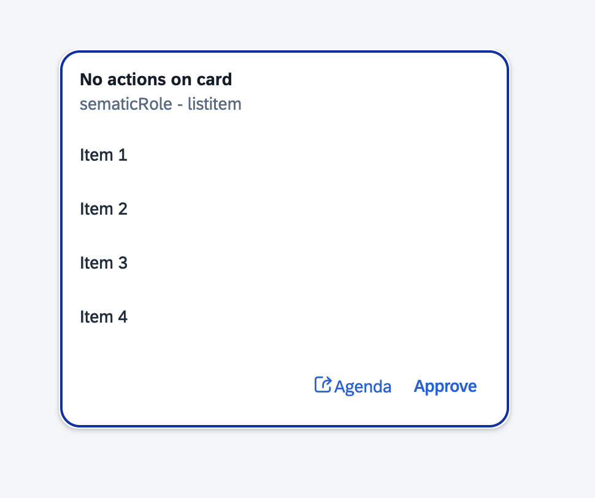
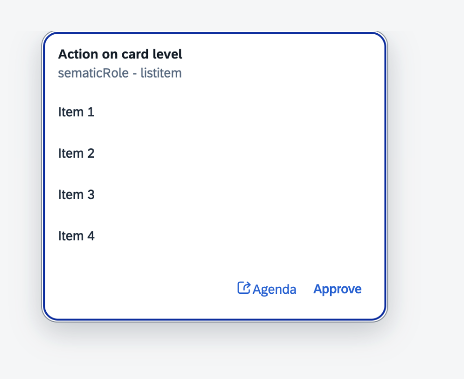
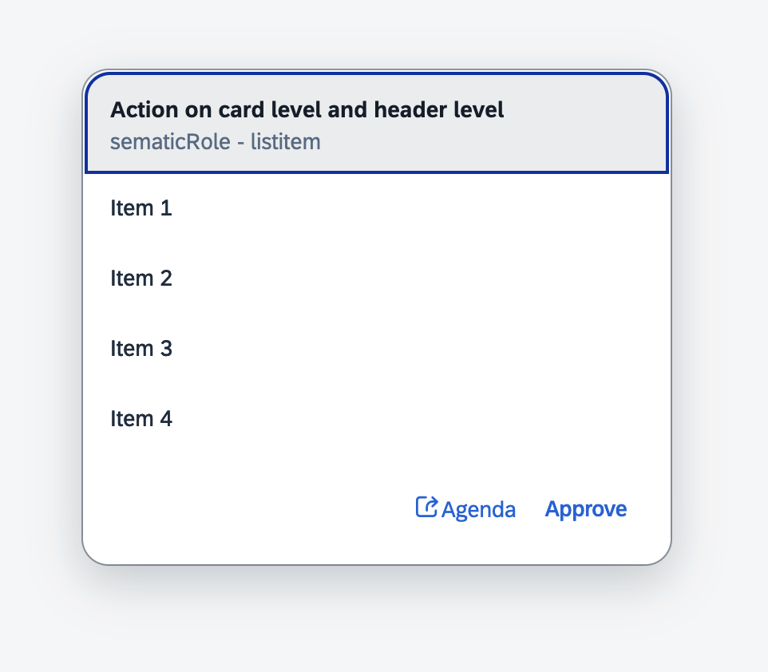
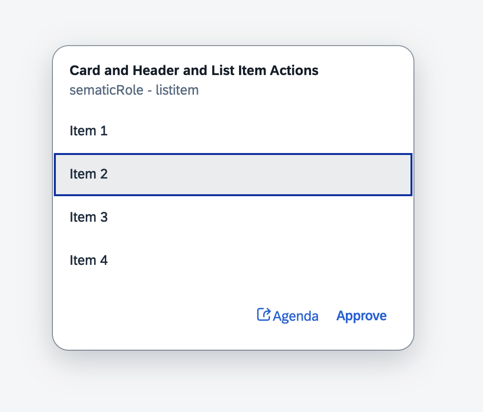

Interaction Types
The card developer can specify several combinations for card interactions:
-
Non-interactive Card - the card only shows data
-
Card Header Interaction - the card can have interactions configured for the entire header, for example an action navigating to an underlying business application.
-
Whole Card Interaction (Experimental) - clicking anywhere in the card can trigger an action, making the whole card interactive.
Note: Whole Card Interaction has specific requirements, related to the host environment: the card must have the role of "listitem" and it must be located within a "list." If the card is not designated as a "listitem," this type of interaction will not function properly. For more details see the Card Interactions in Integrate Section. -
A range of separate interactive elements inside the card can be used as well - like links and buttons.
-
Whole Card and Card Header Interaction (not recommended) - clicking on card level or on card header Level can trigger different actions. This combination of interactions is not recommended. You should choose either Whole Card Interaction or Card Header Interaction.
Examples:
-
The card is not interactive - no actions are set in the card's manifest
 -
The whole card is interactive (Experimental) - actions are set on card level in the card's manifest.
Note: Whole Card Interaction has specific requirements, related to the host environment: the card must have the role of "listitem" and it must be located within a "list." If the card is not designated as a "listitem," this type of interaction will not function properly. For more details see the Card Interactions in Integrate Section."sap.card": { "actions": [{ "type": "Navigation", "parameters": { "url": "https://sap.com", "target": "_blank" } }] }, -
The header of the card is interactive - actions are set on card header level in the card's manifest
"header": { "title": "Card Header Actions", "actions": [{ "type": "Navigation", "parameters": { "url": "https://sap.com", "target": "_blank" } }] }, -
Individual interactive elements inside the card. Actions can be set on these elements. Such elements are available in the header, the content, and the footer.
"content": { "data": { "path": "/items" }, "item": { "title": "{title}", "actions": [{ "type": "Navigation", "parameters": { "url": "https://sap.com", "target": "_blank" } }] }, }, "footer": { "actionsStrip": [ { "type": "ToolbarSpacer" }, { "type": "Link", "text": "Agenda", "icon": "sap-icon://action", "actions": [{ "type": "Navigation", "parameters": { "url": "{agendaUrl}" } }] }, { "text": "Approve", "overflowPriority": "High", "actions": [{ "type": "Custom", "parameters": { "method": "approve" } }] } ] }
Accessibility
To provide comprehensive information about the card aria-describedby attribute will
contain the
following information:
- Card Type - i.e. List Card, Object Card etc.
- Interactivity - whether the card is active or not
- Interaction Guidance - instructions on how to interact with the card
- Badge and Indicator Explanations
Keyboard Interaction
Navigation
| Keys | Behavior |
|---|---|
| Tab | Forward Navigation. |
| Shift + Tab | Backward Navigation. |
Navigation In Enabled Container
This keyboard handling depends on surrounding container implementation. For example, you can use sap.f.GridContainer.
For more information see Card Interactions in Integrate Section.
| Keys | Behavior |
|---|---|
| F7 | If the focus is currently set on the card level, F7 shifts back the focus to the UI element within the card that previously had the focus. If the focus is currently set on an UI element inside the card, F7 saves the focus position for later re-entry and shifts the focus back on the card level. |
| Arrow Keys | If the focus is currently set on the card level, Arrow Keys move the focus between different cards in the enabled container. |
Selection
| Keys | Behaviour |
|---|---|
| Spacebar, Enter, Return | Triggers the action of the focused interactive card / element. Pressing Enter or Return will trigger the action on keydown. Pressing Spacebar will trigger the action on keyup. |
| Esc, Shift | While the Spacebar key is pressed, pressing simultaneously either Shift or Escape will cancel the action without triggering it. |